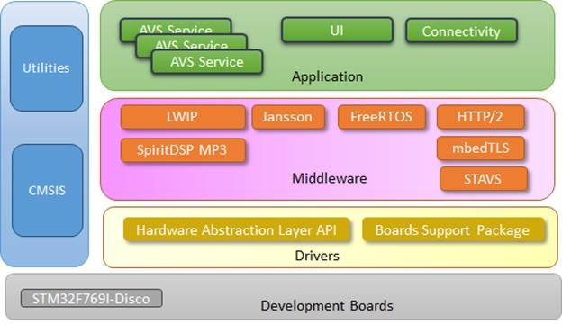
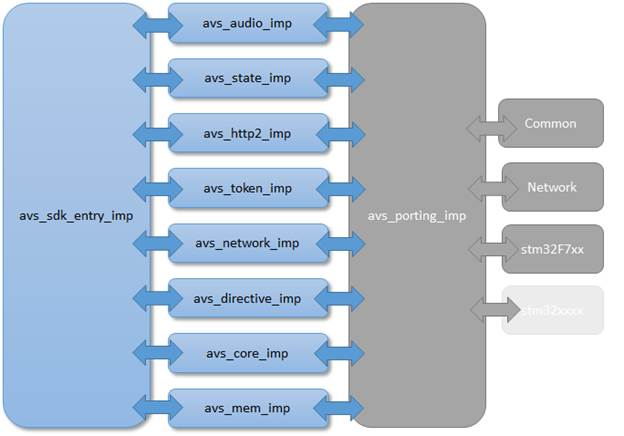
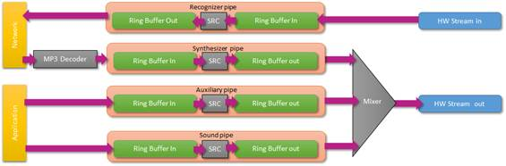

|
STVS4A
v1.1.1
|
|
STVS4A
v1.1.1
|
This reference manual describes in detail the content of the STM32Cube software expansion package to enable Amazon® AVS® interfacing from a STM32application.
The reference manual describes the API and the interaction between the Application and the server.
STVS4A is a Middleware working with several dependences. Some dependences are part of the package the standard STM32 delivery, some other come from the open source community. There are two packages released as binaries. SpiritDSP MP3 doesn’t use dependences and can be used freely in the application, but the stack HTTP/2 is linked with FreeRTOS, LWIP, and mbedTLS API. This means that the change of their configuration header must be done carefully. All configurations change that modify a struct exposed in the configuration header could cause failures in the STVS4A application. In this case, the HTTP/2 library must be re-built using the new configuration.

STVS4A Depandances
The aims of the section are not to describe the internal of STVS4A, but just give an overview of the architecture and how modules communicate between them.
STVS4A use 3 main layers, the first one is the SDK entry, all functions coming from the application goes to avs_sdk_entry_imp. This module is in charge to check parameters, eventually lock the function, and execute it.
STVS4A core manages the AVS protocol with the server, the protocol includes audio management, network directive/event parsing. This layer has no platform dependencies. The support of network, board, and some other element that are delegated in the porting layer. The STVS4A core communicates with HW dependences using drivers and IOCTL implemented in the porting layer. As introduced before, the porting layer connects the Core with the Hardware or configuration variance. The avs_porting_imp does this link.

STVS4A Internal
This module is in charge to manage all audio aspects. Alexa speaks using an MP3 file at 24K two channels and expects an audio input samples at 16K one channel and 16 bits. Avs_audio creates 2 threads in charge to pump samples from the ring buffer and to copy it in a second buffer and eventually applies a sample rate conversion if those two buffers have different rates and channels. The sample processing is not equivalent for the microphone and the speaker. Pipes are mapped as follow.

Audio pipes block diagram
Notice that the recognizer pipe has a Sample Rate Converter, but the processing is disabled, it is not the case for other pipes. The SRC is active only when it is mandatory. Network pipelines are managed by STVS4A, but the Sound and the Auxiliary stream are in the control of the application. Auxiliary pipe is mainly used for the media player. The HW stream input and output have a fixed frequency, it I possible to change it in the instance factory.
The state module creates one thread and manages the AVS interaction cycle. An interaction cycle starts with a StartCapture state and finishes with an IDLE state. According to the interaction model, this module can use a simple-turn model or multi-turn. In this case, Alexa will generate several sequences of StartCapture before to finish it cycle. Notice that this module is also in charge to manage the network perturbation or disconnection. If an issue is reported by another module, the state thread will try to kindly disconnect the network and try to reconnect it, until the connection is ready. The state thread is also in charge to pull/push network payloads and feed audio buffer during the AVS interaction Capture and Speak.
This module doesn’t create thread directly, but Network API dependences do it. This module creates a network abstraction and exposes basic network services for other modules. Avs_Network setup the network and manage IP Gateway DNS, TLS, network time, etc. This module doesn’t implement directly those services, the real implementation is done in the Porting Layer. Today the porting layer supports LWIP or Cyclone stacks.
This module creates one thread and manage the HTTP2 token using a TLS connection. This token takes the form of a character string. The first token is retrieved using the AVS grant code authentication mechanism. A HTTP/2 connection with the server supposes to transmit a token for each transaction. This token has a limited persistence, the server will keep the connection with the same token during 60 minutes. When the time is over, all transactions will be rejected. This module manages the token renew. The token renew occurs automatically every 50 minutes. In some rare occasion, we may need to force the token renew, STVS4A exposes the IOCTL AVS_NETWORK_RENEW_TOKEN to force the token renew (for example, we use the mechanism in the endurance test sample code).
This module creates one thread and manage the HTTP/2 connection. This thread restart for each HTTP/2 session and manage 4 streams (the number of streams could be modified by configuration). When a network error occurs, the thread is restarted from scratch. The module starts by some authentication transaction with the server, then it manages the downstream channel LiveCycle and exposes also a set of API to manage http/2 streams for other modules.
This module creates one thread. The thread manages the downstream channels. Downstream channels allow to receive directives from the server and may occurs at any time. Notice that the server could also send directives via the state thread and the event recognizer when it transits from the state capture to speak. During the server response, and in the multi-part section, the JSON could embed some directives. The directive module is also in charge to parse incoming directive and dispatch the result of its parse via the STVS4A event mechanism. This module also exposes some API to manage directive to other modules.
This module doesn’t create threads. The transaction with AVS server is done using events and directives. Both uses JSON strings as a communication supports. This module exposes some API to format those Event and Directive for other modules. It is also in charge to manage the specific memory pool of short persistence object in order to limit and contain the memory fragmentation in the heap.
This module doesn’t create threads, this module exposes a set of general API used by other modules. It provides an OS abstraction, expose pooled memory API, and debug tools and many other utilities useful for STVS4A.
This module doesn’t create threads, this module manages a memory pool from a base address and a size. It exposes an API used by other modules. The base address could be placed anywhere and create a pool. This module is used to create DTCM, PRAM, SHORT_OBJECT pools. The pool API replicate exactly of the stdlib (parameters and behaviors, malloc, calloc, realloc, free), except that the first parameters is a memory pool pointer. The memory pool manager is highly instrumented to detect memory leak and corruption. Using some specific configuration, this module could overload the standard heap manager in order to track corruptions and leaks.
 1.8.4
1.8.4